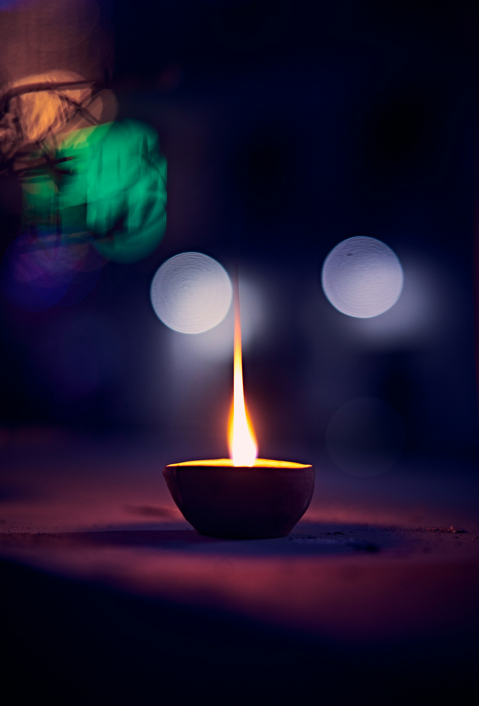

Tempel
Minde, Bergen — innviet 2004

Bergen Hindu Sabha er innenfor shivaisme-retningen av hinduisme, med eget tempel på Minde. Vi uttrykker vår takknemlighet til alle som deltar i templets daglige pujaer og til alle som hjelper.
Minde, Bergen — innviet 2004
Ca. 830 medlemmer
Trossamfunn siden 1990

Det er omtrent 830 medlemmer i Bergen Hindu Sabha, hovedsakelig fra Sri Lanka, India, Nepal og Bangladesh. Økningen i antall hinduer i Norge, spesielt på 1980-tallet, skyldtes i stor grad tilstrømningen av tamiler som flyktet fra borgerkrigen i Sri Lanka.
I begynnelsen ble religiøse samlinger holdt i private hjem. Bergen Hindu Sabha ble offisielt registrert som et trossamfunn i 1990 og opererte først fra leide lokaler på Danmarksplass. Tempelanlegget ble innviet i 2004, ligger i den gamle kinosalen i tidligere Fanahallen på Minde, og er dedikert til guden Ganesha.
For å ivareta tempeltjenester og seremonier har samfunnet ansatt en hindu-prest fra Sri Lanka.
Les mer om ossVårt samfunn tilbyr en rekke arrangementer som feirer hinduismen og fremmer fellesskapet — fra daglige pujaer til store høytider.
Templet holder daglige pujaer og abhishekam, ledet av vår prest fra Sri Lanka.
Vi feirer store hinduistiske høytider som Diwali, Thiruvizha og den årlige Mahotsavam.
Elever kan besøke templet for å lære om hinduismen og den hinduistiske kulturen.
Hold deg oppdatert med kommende hendelser og bli med oss for en berikende opplevelse av hinduistisk kultur og tro.
Ta kontakt via e-post eller telefon — vi er her for å hjelpe, og ser frem til å høre fra deg.